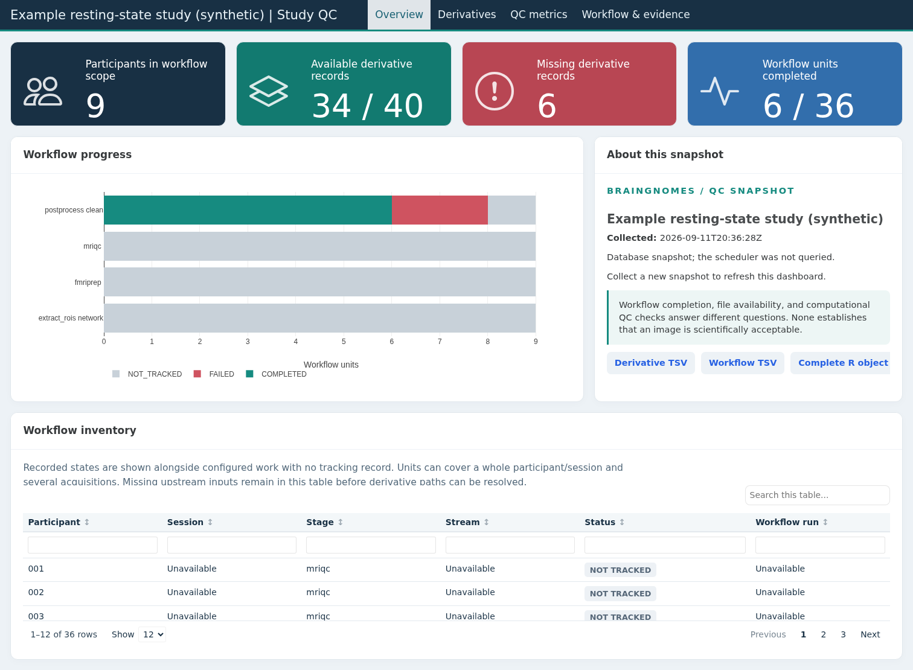

BrainGnomes is an R package for configuring, submitting, and monitoring reproducible fMRI workflows on high-performance computing (HPC) systems. It coordinates containerized neuroimaging tools and scheduler jobs from one project configuration, while retaining logs and job-tracking information for each run.
The package supports the parts of a workflow that you need: optional Flywheel synchronization, DICOM-to-BIDS conversion with HeuDiConv, MRIQC, fMRIPrep, ICA-AROMA, postprocessing, and ROI time-series/connectivity extraction. BIDS validation is configured with the project but submitted separately through run_bids_validation(). You can begin with raw DICOMs or use it only for later steps when BIDS or fMRIPrep outputs already exist.
Is BrainGnomes a good fit?
BrainGnomes is designed for studies run on an HPC cluster with a SLURM or TORQUE scheduler and containerized imaging software. It is especially useful when a project needs repeatable per-subject processing, configured resource requests, dependency-aware job submission, and a clear record of what completed or failed.
Installing and loading the R package does not require a cluster. Scheduler and container requirements apply when you submit pipeline stages. Requirements are stage-specific:
| Capability or stage | Additional requirements |
|---|---|
| Configuration inspection, BIDS filename helpers, status tables, and native image helpers | R 4.1 or later and the R dependencies installed with BrainGnomes; no scheduler or container |
| Any scheduled pipeline stage | SLURM or TORQUE/PBS, Bash, shared readable/writable project storage, and site-specific scheduler settings |
| Flywheel synchronization | Flywheel fw CLI and account access |
| DICOM-to-BIDS conversion | Singularity-compatible HeuDiConv image, source DICOMs, and a study-specific Python heuristic |
| BIDS validation | BIDS validator executable; configured with the project but submitted separately through run_bids_validation()
|
| MRIQC | Singularity-compatible MRIQC image |
| fMRIPrep | Singularity-compatible fMRIPrep image, BIDS inputs, TemplateFlow cache, and a FreeSurfer license |
| ICA-AROMA | Singularity-compatible fMRIPost-AROMA image |
| Postprocessing | Singularity-compatible FSL image; Python 3 with nibabel, nilearn, and templateflow when template-mask resampling is used |
| ROI extraction | Postprocessed BOLD inputs and compatible atlas/mask NIfTI files; direct extract_rois() calls can run locally, while project-managed extraction uses the scheduler |
| QC inventory and TSV/RDS export | Existing project records; no scheduler or container |
| Interactive QC dashboard | Quarto >= 1.4 and optional R packages reactable, plotly, htmltools, htmlwidgets, knitr, and rmarkdown
|
BrainGnomes scripts invoke singularity; an Apptainer installation is suitable when it provides that compatibility command.
See the Quickstart for the full configuration workflow, or start with Local onboarding and prerequisites to inspect a miniature configuration and run examples without a cluster.
Installation
BrainGnomes is installed from GitHub. In R:
install.packages("remotes") # once, if needed
remotes::install_github("HallquistLab/BrainGnomes")
library(BrainGnomes)Install a specific release
To install a particular tagged release rather than the latest development version, supply its tag with ref. For example:
remotes::install_github("HallquistLab/BrainGnomes", ref = "0.9-2")See the available tags to choose an available tag.
Typical workflow
The established R workflow remains the primary path. Set up a project once, run it directly, inspect progress while work is active, and diagnose only when a failure needs investigation.
library(BrainGnomes)
scfg <- setup_project()
run <- run_project(scfg)
status <- inspect_project(scfg)
# Only when a run needs investigation:
diagnose_project(scfg)For automation or a headless starting configuration, provide the project name and directory explicitly. This creates the standard directories, writes project_config.yaml, and leaves processing stages disabled until configured:
scfg <- setup_project(
project_name = "my_study",
project_directory = "/project/my_study",
interactive = FALSE
)The equivalent command-line entry point is BrainGnomes init my_study /project/my_study.
For later sessions, pass the project directory or configuration YAML directly:
run <- run_project("/project/my_study")All project lifecycle helpers accept a configuration object, configuration YAML, or project directory. When the current working directory is the project root, omit the project input entirely:
setwd("/project/my_study")
run <- run_project()
inspect_project()
diagnose_project() # guided browser in an interactive R sessionUse load_project() when you want to inspect or modify the configuration object itself; it accepts the same inputs and also defaults to the current directory.
The command-line interface preserves the same workflow. The shorter init and run command names are also accepted.
BrainGnomes setup_project my_study /project/my_study
BrainGnomes run_project /project/my_study
BrainGnomes status /project/my_study
# Only when a run needs investigation:
BrainGnomes diagnose /project/my_study --interactiveOptional inspection and automation tools
None of the following is a prerequisite for run_project():
-
Config (
validate_project_config()orBrainGnomes config) provides a non-interactive way to show, validate, or edit YAML. It is useful in scripts, CI, and configuration review. Direct runs retain their existing selected-stage checks. -
Doctor (
doctor_project()orBrainGnomes doctor) performs a broader, non-mutating submission-host preflight. It is valuable on a new cluster, after modules, containers, or storage have changed, or before an expensive run when an up-front environment report is desirable. -
Plan (
plan_project()orBrainGnomes plan) exposes the stages, streams, known subject/session scope, resources, dependencies, and implicit setup work for a request. It is useful for review, persistence, and automated approval workflows. A plan is not a pre-rendered scheduler job list. When Flywheel may add data, it says that scope is deferred and the run records the subjects and sessions found after synchronization.run_project()resolves this same request model internally, so users do not need to create or submit a plan first.
For example, an optional review-and-submit workflow is:
validation <- validate_project_config(scfg)
preflight <- doctor_project(scfg)
plan <- plan_project(scfg, steps = "all")
write_project_plan(plan, "run.yaml")
run <- submit_project_plan(plan)Optional run operations
Every submitted run records a provenance bundle beneath <log_directory>/runs/<run_id>/. It contains the exact configuration and resolved subject scope plus a JSON record of the request, resources, dependencies, BrainGnomes/R/platform versions, submission host, scheduler, and checksummed containers and other execution-driving files. Read it with get_run_provenance(scfg, run$run_id) or BrainGnomes provenance <project>. Before jobs are submitted, run_project() reports when it is finding subjects and saving this run record. The first use of a large container in a project can take a minute because BrainGnomes reads the complete file to identify the exact copy used; later runs reuse the project’s saved result while the file is unchanged.
The run record distinguishes intended work from work actually sent to the scheduler. Immediately before each managed sbatch or qsub submission, BrainGnomes writes an immutable job manifest beneath <log_directory>/runs/<run_id>/jobs/. It records the stage, subject/session, resources, dependencies, command, relevant environment, logs, and checksums of the scripts, configuration, containers, and other files that control that job. When the scheduler starts the job, a runtime receipt records the compute host and verifies those checksums. A missing or changed manifest or execution-driving file stops the job with a pointer to its receipt. These paths also appear in inspect_project(scfg)$jobs and the run provenance.
For a Flywheel run, the initial plan and run record mark subject scope as deferred. After synchronization succeeds, BrainGnomes saves scope-realization.json with the subjects and sessions it found, then creates the downstream job manifests. This permits new Flywheel data to enter the run without treating the earlier plan as an exact job roster.
inspect_project(scfg) reports the current effective project state across runs, using the newest attempt for each subject, stage, and stream. Its overview, active, reconciliation, stages, subjects, subject_stages, runs, attempts, and jobs elements are ordinary data frames. Supply subject_id to focus every view on one subject, or run_id = "latest"/an explicit ID to restrict inspection to one submission. The default remains database-only; refresh = TRUE adds a read-only scheduler comparison for jobs recorded as queued or running.
subject_status <- inspect_project(scfg, subject_id = "540294")
active_status <- inspect_project(scfg, refresh = TRUE)
active_status$active
active_status$reconciliationIf work fails, first inspect the failed jobs and logs, correct the underlying problem, and then preview the retry:
status <- inspect_project(scfg)
diagnosis <- diagnose_project(status, interactive = FALSE)
failed_logs <- find_run_logs(scfg, run$run_id, failed_only = TRUE)
retry_plan <- retry_project_run(scfg, run$run_id, dry_run = TRUE)
# This submits a new run; it does not change the original run.
retry_run <- retry_project_run(scfg, run$run_id, dry_run = FALSE)In an interactive session, diagnose_project(scfg) starts with current unresolved problems and carries each stage, subject, or run selection forward until a specific job and its logs are reached. Skip directly to a known subject or scheduler job when useful:
diagnose_project(scfg, subject_id = "540294")
diagnose_project(scfg, job_id = "66273010")By default, retry includes jobs that failed or were cancelled. Set include_blocked = TRUE only when the new run should also include downstream jobs that could not start because an earlier job failed. The new run records the source run ID in provenance.
The CLI requires an explicit choice between a preview and action:
BrainGnomes retry /project/my_study --run=<run-id> --dry-run
BrainGnomes retry /project/my_study --run=<run-id> --yesCancellation follows the same preview-first pattern and affects only queued or running scheduler jobs; it does not delete project data or outputs. BIDS validation remains independently schedulable with run_bids_validation() or BrainGnomes validate-bids. The Quickstart shows the primary workflow and these optional tools.
Study QC dashboard
Collect existing workflow records and diagnostic files into a study snapshot:
qc <- collect_qc_inventory(scfg)
qc$inventory # derivative availability and QC summaries
qc$workflow # expected work and recorded execution states
write_qc_inventory(qc, "reports/qc-tables-2026-09-11")
render_qc_dashboard(qc, "reports/qc-dashboard-2026-09-11")The Quarto dashboard includes searchable React tables, interactive metric plots, regional coverage, and links to existing reports and logs. Each output directory contains one snapshot; use a new directory to refresh it. Collection does not change workflow state or make inclusion decisions. See the study QC vignette for dependencies and interpretation.

Documentation
The package website includes function reference pages, release notes, and the following guides:
- BrainGnomes Quickstart — set up a project and run an end-to-end workflow.
- Local onboarding and prerequisites — inspect an installed example configuration and run a first task without scheduler or container access.
- Building Singularity containers for BrainGnomes — create the container images used by pipeline stages.
- Postprocessing Walkthrough — configure masking, smoothing, AROMA, filtering, scrubbing, intensity normalization, and confound regression.
- Motion Quality Control and Framewise Displacement Summaries — compare raw and filtered FD, summarize thresholds, export run-level QC decisions, and connect those decisions to scrubbing.
- Extracting ROI Timeseries and Connectivity — configure atlas/mask ROI extraction and connectivity outputs.
- Diagnosing Pipeline Runs — triage project or subject status and investigate failures from job-tracking records and logs.
- Run-wise Intensity Normalization — understand the robust reference-core approach, targets, provenance, quality checks, and troubleshooting.
Getting help and contributing
Please open an issue for bugs, questions, or feature requests. Contributions are welcome; see CONTRIBUTING.md for the development workflow.